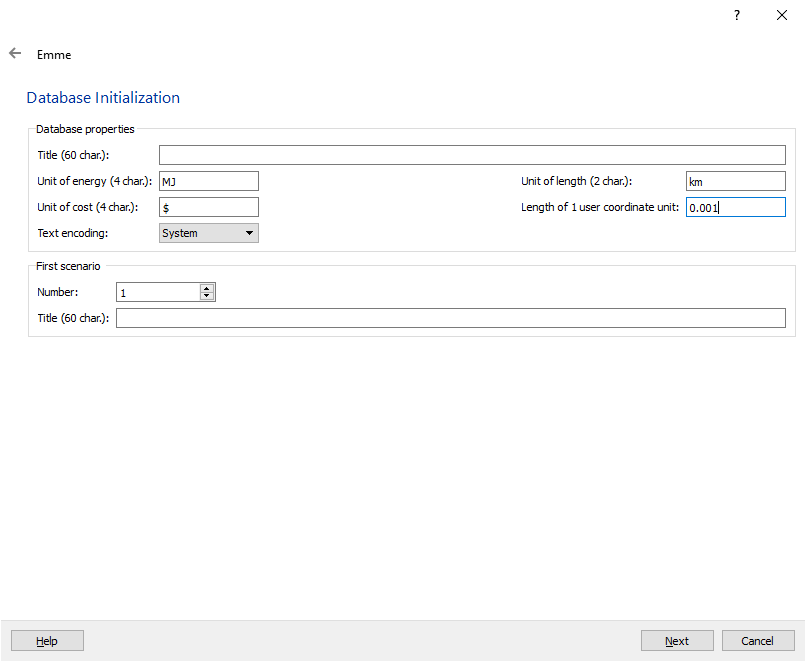

Emme Project Setup
Emme Version
It is strongly recommended that users install the latest version of Emme, at least 4.2, for running the model. The model is mostly backwards compatible (although this is a currently untested statement) to at least Emme 4.0, but running the model with previous versions will significantly change its results.
Emme Databank
An Emme project of sufficient size is required to be set up before being able to run GTAModel. Table [1] below shows the recommended dimensions for each network element.
| Emme Databank Element | Recommended Allotment for GTAModel V4.0 | Recommended Allotment for GTAModel V4.1+ |
|---|---|---|
| Scenarios | 100 | 15 |
| Scalar Matrices | 99 | 99 |
| Origin Matrices | 99 | 99 |
| Destination Matrices | 99 | 99 |
| Full Matrices | 200 | 99 |
| Zones or Centroids | 3,250 | 3,750 |
| Regular Nodes | 29,249 | 33,749 |
| Directional Links | 162,500 | 187,500 |
| Turn Table Entries | 10,000 | 10,000 |
| Transit Vehicles | 30 | 30 |
| Transit Lines or Routes | 5,000 | 5,000 |
| Transit Line Segments | 200,000 | 300,000 |
| Extra Attribute Size | 4,000,000 | 10,000,000 |
| Functions | 99 | 99 |
| Operators | 2,000 | 5,000 |
In addition to the dimensions, proper units are also required. The image below shows our configuration.

Adding TMG Toolbox
All network assignment modules in the model system are implemented in the TMG Toolbox. As such, in order to run GTAModel V4
users will need to ensure that their Emme project is using the Toolbox. If this is not done properly, then Emme will raise an error
“A tool with the following namespace could not be found…” This can be fixed by launching Emme Modeller, right-clicking at the top left on “Add a Toolbox…”
and browsing to the location of the file TMG_Toolbox.mtbx. Note that Emme maintains a static link to this file location so if the file is moved then Emme
will not be able to find it. When running GTAModel please make sure to use the version of the TMGToolbox that came with your copy of XTMF. You can find the
associated toolbox in the Modules directory. If you are using EMME 4.6+ please link to the toolbox TMG_Toolbox_Python3.mtbx otherwise please use TMG_Toolbox.mtbx.
XTMF does not support EMME 4.5.
If necessary, the latest version of the TMG Toolbox can be found at: https://github.com/TravelModellingGroup/TMGToolbox.
Scenarios
A minimum of 5 scenarios are required to run the model, one for each of the 5 time periods: AM, Midday, PM, Evening, and Overnight. These can be obtained from TMG directly if requested, and they contain level-of-service attributes for all transit lines, plus turn restrictions that change by time-of-day (e.g. Jameson entrance to the Gardiner in Toronto, entrance to Sherman Access in Hamilton). During the model run, fare-based transit network (FBTN) scenarios will be generated automatically in order to run the fare-based transit assignment. Therefore, users should leave room in the databank for 4 blank scenarios . Traffic assignment always requires space for one temporary scenario as well (to hold the all-or-nothing assignment), which will be cleaned up on completion.
Alternatively, there is a process defined in this document for generating the time periods matrices from a base network.
Extra Attributes
GTAModel V4 is setup to be flexible with extra attributes; tools which make use of extra attributes typically accept attribute IDs as part of their arguments. However, the model system is currently setup to use the following defaults:
@z407(LINK): Flags link fare zones for the 407ETR. A value of 1 for the light zone (the western portion up to 403 interchange) and a value of 2 for the regular zone (the rest of the 407). This attribute is the only exogenous attribute currently required by GTAModel V4, but is only required in order to calculate the link toll attribute. Users wishing to setup their own road pricing scheme can ignore this attribute.@toll(LINK): Contains the toll amount (in $) users pay when travelling along a link. This can be calculated based on existing data (see tool Calculate 407 ETR Tolls) or manually-calculated by hand. By default, the XTMF model system is setup to calculate the 407 tolls automatically based on the 407 fare zone (@z407)@frac(NODE): Headway fraction attribute (initialized to 0.5). Used to store differential headway fraction values, particularly for GO Trains.@walkp(LINK): Walk perception attribute. Used to store spatial variations in walking perception.@lfare(LINK): Link fare attribute. Stores fare costs on links transferring to the FBTN hyper-network (initial and transfer fares). Created by the FBTN-generation procedure if the attribute does not already exist.@sfare(SEGMENT): Segment fare attribute. Store fare costs on transit segments for in-vehicle fares such as by-distance or zonal fares. Created by the FBTN-generation procedure if the attribute does not already exist.@ehdw(LINE): Effective Headway attribute. Used to store the headway experienced when boarding a vehicle on the given line. This attribute will be assigned to in transit assignment.@stn1,@stn2(LINK): Link flag for Cordon Count post location, and are used for analysis only. Users wishing to get extract link volumes for their own set of flags can create their own attribute write into this attribute if the link is not already flagged. See Countpost Results Tool.
In addition, several attributes are reserved for storing particular data. Users are advised to use such attributes as ‘read only’ as they will be overwritten each time an assignment is run. They are as follows:
@tvph(LINK): Reserved for use in auto assignment. Used to store transit auto-vehicle equivalencies which are custom-calculated.@ccost(SEGMENT): Reserved for use in transit assignment. Stores final segment congestion costs from the congested transit assignment.@board(SEGMENT): Reserved for transit assignment results (transit segment boardings), copied over from the FBTN scenario to the base scenario.@timtr(SEGMENT): Reserved for transit assignment results (transit segment times), copied over from the FBTN scenario to the base scenario.@voltr(SEGMENT): Reserved for transit assignment results (transit segment volumes) copied over from the FBTN scenario to the base scenario.@aligt(SEGMENT): Reserved for transit assignment results (transit segment alightings) copied over from the FBTN scenario to the base scenario.
Finally, it should be noted that extra function attribute EL1 is reserved for including transit auto equivalencies in the traffic assignment procedure, and that transit segment attribute US3 is reserved for storing transit congestion.
Matrices
GTAModel V4 is also flexible with matrix locations. Tools that require matrix inputs or produce matrix outputs can be re-configured to save into any available matrix, or use an available matrix temporarily. For example, the road assignment tool requires space for one temporary matrix to store the factored demand matrix. For tools which allow the user to specify in input or output matrices, the model system is currently setup to use the following:
MF10,MF20,MF30,MF40: Base auto demand matrices, including the auto portion of drive-access-transit trips, for AM, Midday, PM, and Evening time periods, respectively.MF15,MF25,MF35,MF45: Base AM transit demand matrices, including transit portion of drive-access-, and passenger-access-transit trips, for AM, Midday, PM, and Evening time periods, respectively.MF1: Auto average total tolls matrix. Used for all time periods which are executed in sequence and then exported to disk for use by XTMF.MF2: Auto average total cost matrix (per-km cost + tolls paid). Used for all time periods which are executed in sequence and then exported to disk for use by XTMF.MF3: Auto average total in-vehicle travel time matrix. Used for all time periods which are executed in sequence and then exported to disk for use by XTMF.MF4: Transit average total fares matrix. Used for all time periods which are executed in sequence and then exported to disk for use by XTMF.MF5: Transit average total in-vehicle travel time matrix. Used for all time periods which are executed in sequence and then exported to disk for use by XTMF.MF6: Transit average total waiting time matrix. Used for all time periods which are executed in sequence and then exported to disk for use by XTMF.MF7: Transit average total walking time matrix. Used for all time periods which are executed in sequence and then exported to disk for use by XTMF.MF8: Transit perceived travel time matrix. Used for all time periods which are executed in sequence and then exported to disk for use by XTMF.
Network Encoding
Generally speaking, the model assumes that the network is in compliance with Network Coding Standard 11 (NCS11). Specific (hard-coded) assumptions are as follows:
- Link lengths are assumed to be in km.
- Link attribute UL2 is assumed to hold link freeflow speed, in km/hr.
- Link attribute UL3 is assumed to hold link auto vehicle capacity, in vehicles per hour per lane.
- Transit segment US2 is reserved for storing the in vehicle time perception factor
- Transit line boarding penalties are assumed to be stored in UT3. Currently the model system includes a module which assigns boarding penalties based on the following assumptions:
- TTC lines start with “T” and use modes B, S, and M for buses, streetcars, and subways, respectively. Currently the tool is hard-coded to recognize the 510 and 512 streetcar lines as “XROW Streetcar,” however this is easily modifiable in the near future.
- Durham lines start with “D”
- YRT regular buses start with “Y,” with VIVA lines starting with “YV”
- MiWay buses start with “M”
- Brampton buses start with “B”
- All Halton Region operators (Oakville, Burlington, and Milton) lines start with “H”
- HSR buses start with “W”
- Note that these assumptions are also encoded with the Fare Rules XML file.
- Node numberings are required to be consistent with NCS11, particularly for Toronto nodes. The model formulation is such that links within the City of Toronto have a different walk perception than links outside it. GO train station nodes (the stops themselves, not zone centroids) are also assumed to be consistently numbered.
- For most transit lines (i.e. bus routes on local roads), the line speed is used to determine travel times.
- For subway, GO train, and GO bus lines, speeds are set individually by transit segment, stored in US1.
Functions
Volume Delay Functions
Link Volume-Delay Functions (VDFs) are used to classify roads in accordance with NCS11. The actual functional form used is a tangent function, a hybrid between the BPR function (when volume is less than capacity), and a straight line (as volume exceeds capacity). Its expression is given below:
Where
- \( atime_{ij}(volau) \) is the travel time on link ij for a given auto volume (volau).
- \( fft_{ij} \) is the freeflow travel time, in minutes.
- \( delay_{ij}(volau) \) is the delay function multiplier of the freeflow time
- \( length_{ij} \) is the length of link ij, in km.
- \( speed_{ij} \) is the modelled speed of link ij, in km/hr.
- \( VCR_{ij}(volau) \) is the volume-capacity-ratio of link ij for a given auto volume
- \( \beta \) is the function exponent, set to 4 on most links, and 6 on highways.
- \( vola_{ij} \) is the link additional volume.
- \( tvph_{ij} \) is the transit vehicle auto equivalencies per hour on link ij.
- \( lanes_{ij} \) is the number of lanes of traffic on link ij.
- \( capacity_{ij} \) is the capacity per lanes of link ij, in passenger vehicles per hour.
Travel Time Functions
Transit segments also have assigned travel time functions (TTFs), which classify the type of ROW being used, in accordance with NCS11. ROW-A (exclusive, grade-separated ROW) segments use TTF1, ROW-B (exclusive-lane, but not grade-separated) segments use TTF2, and ROW-C (mixed-traffic) segments use TTF3. In addition, TTF4 was defined for ROW-C services which travel on highways (e.g. GO Bus lines), to allow the segment speeds to be higher where the line travels along highways. Table [2] below lists the five TTF expressions:
| Function | Applies To | Expression |
|---|---|---|
| ft1 | subways | length * 60 / us1 |
| ft2 | exclusive ROW streetcars, LRT, BRT, etc. | length * 60 / speed |
| ft3 | mixed ROW streetcars, LRT, BRT, etc. | length * 60 / speed |
| ft4 | local mixed ROW buses | length * 60 / speed |
| ft5 | GO Buses | length * 60 / speed |
Fare Schema File
The fare schema file is used by the model system to generate hyper-networks required for fare-based transit assignment, and defines the fare structure of the network. The model system is currently configured to use the fare prices and structures for the 2012 base year. This fare schema file identifies 10 layers within the network (see Table [3]); 4 fare zones (see Figure [1]); and 27 fare rules, including GO Transit co-fares, TTC premium routes, and YRT zonal fares. For further documentation on the base fare schema file, refer to the TMG report Fare Based Transit Networks.